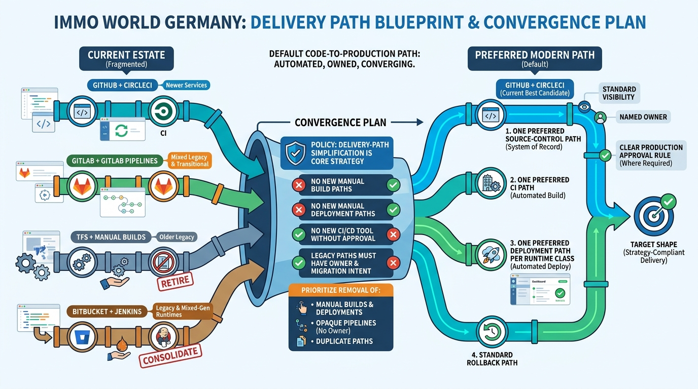

Blueprints and Convergence Plans
Delivery Path Blueprint and Convergence Plan: One Preferred Path from Code to Production

Image generated by Google Gemini (gemini-3-pro-image-preview)
Blueprints and Convergence Plans

Image generated by Google Gemini (gemini-3-pro-image-preview)